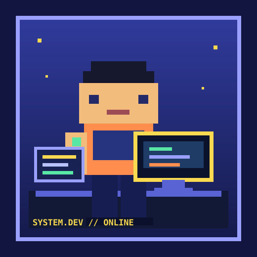
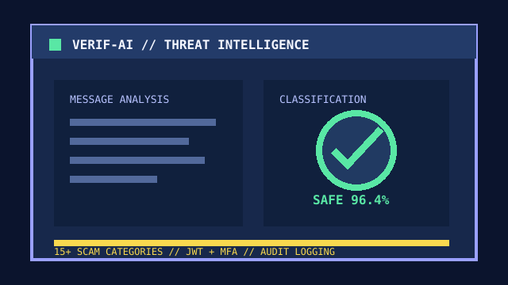

Programming
- Python, JavaScript, Java, C#, Kotlin, and PHP
- HTML and CSS for accessible, responsive interfaces

SYSTEM DEVELOPER / IT STUDENT
I am Hans Lee G. Langit, a motivated IT student specializing in system development. I am passionate about solving complex problems through technology, building scalable applications, and collaborating with teams to create useful digital experiences.
I am pursuing a Bachelor of Science in Information Technology at PHINMA - University of Pangasinan, with a focus on system development. My work combines technical problem-solving with clear communication, teamwork, and a commitment to building reliable solutions.
I enjoy transforming ideas into scalable applications, interactive games, and practical systems that are easy to understand and use.
Specializing in System Development while building full-stack applications, games, and software solutions through academic and capstone projects.
Completed fundamentals training in EC2, DynamoDB, S3, Lambda, API Gateway, and serverless deployment.
Recognized for participation and achievement in the CITE development exhibit.
Received Certificates of Appreciation for completing Success Ladder Level 1 and Level 2 requirements, including the Trojan Awards 2025.
Featured system development work.

Featured | Capstone
Systems Analyst and Frontend Developer for a multi-model NLP platform that classifies 15+ scam categories in real time with confidence scoring and enterprise-grade security.
JWT/MFA authentication, RBAC, BCrypt hashing, rate limiting, audit logging, and an admin performance dashboard.
Use the arrows to browse.
Let us collaborate on school, internship, or freelance projects.